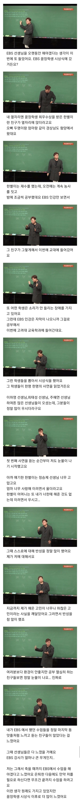

51 · 12 · 2 시간 전 · 원문

수집 당시 댓글 12개
김치맨1988 · 3 시간 전
상상 속의 악은 낭만적이고도 다양하나, 실제의 악은 우울하고 단조로우며 척박하고도 지루하다. 상상 속의 선은 지루하지만, 실제의 선은 언제나 새롭고 놀라우며 매혹적이다.
↳ 답글 · 렙직장인 · 2 시간 전
중력과 은총, 시몬베유
↳ 답글 · 라면에주먹밥 · 2 시간 전
질서 선
↳ 답글 · 진시항S2 · 1 시간 전
내 인생 글귀
곧휴가철이다 · 2 시간 전
got
판소리복서 · 2 시간 전
EBS : 계획대로야.... 정승제 선생님을 우리에게 귀속시켰다 후후후후후
오이짠지 · 2 시간 전
공부바이럴
↳ 답글 · 게살버거비법 · 2 시간 전
착한 바이럴
RESCENE · 2 시간 전
하지만 사생팬이 아저씨란 걸 알고서는 연락하지 않는 그...
니글니글 · 2 시간 전
EBS 바이럴썸즈 업
무시 · 2 시간 전
요즘 강남구청 인강 어떰?나 때는 인기 꽤 있었는데
전산실김씨 · 1 시간 전
어? 선생님 컨셉 유튜버 아니었어? 맨날 먹을거이야기하던데
상상 속의 악은 낭만적이고도 다양하나, 실제의 악은 우울하고 단조로우며 척박하고도 지루하다. 상상 속의 선은 지루하지만, 실제의 선은 언제나 새롭고 놀라우며 매혹적이다.